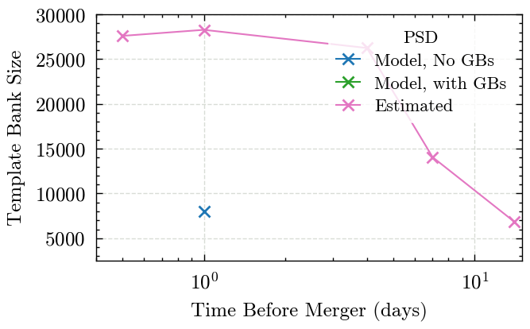

Plotting template banks#
Here we plot the template banks sizes, in particular generating and Figure 3
import h5py
import numpy as np
def get_bank_size(bank_filename):
try:
with h5py.File(bank_filename, 'r') as bank_f:
return bank_f['mass1'].size
except FileNotFoundError:
return np.nan
estimated_bank_format = "../template_bank/output/lisa_ew_{days_before_merger}_day.hdf"
days_before = [0.5, 1, 4, 7, 14]
bank_size_estimated = {}
for day_before in days_before:
bank_size_estimated[day_before] = get_bank_size(estimated_bank_format.format(days_before_merger=day_before))
print(bank_size_estimated)
{0.5: 27593, 1: 28270, 4: 26242, 7: 14051, 14: 6861}
withgb_bank_format = "../template_bank/output/lisa_ew_model_{days_before_merger}_day.hdf"
days_before = [0.5, 1, 4, 7, 14]
bank_size_withgb = {}
for day_before in days_before:
bank_size_withgb[day_before] = get_bank_size(withgb_bank_format.format(days_before_merger=day_before))
print(bank_size_withgb)
{0.5: nan, 1: nan, 4: nan, 7: nan, 14: nan}
previous_bank_format = "../../datasets/lisa_ew_{days_before_merger}_day_optimistic.hdf"
bank_size_previous = {}
for day_before in days_before:
bank_size_previous[day_before] = get_bank_size(previous_bank_format.format(days_before_merger=day_before))
print(bank_size_previous)
{0.5: nan, 1: 7997, 4: nan, 7: nan, 14: nan}
max_factor = 0
min_factor = np.inf
for day_before in days_before:
n_previous= bank_size_previous[day_before]
n_withgb = bank_size_withgb[day_before]
n_estimated = bank_size_estimated[day_before]
max_factor = max(max_factor, n_withgb / n_previous)
min_factor = min(min_factor, n_withgb / n_previous)
max_factor = max(max_factor, n_estimated / n_previous)
min_factor = min(min_factor, n_estimated / n_previous)
Previous iterations of the paper had this as a table, but the plot seems to be nicer, but the code is kept here for info
def to_str(size_int):
if not np.isnan(size_int):
return f"{size_int:,d}"
else:
return '--'
tabular_str = """\\begin{tabular}{|c|ccc|}
\\hline
Time before Merger & \multicolumn{3}{c|}{Number of Templates} \\\\
\\cline{2-4}
(days) & Model, no GBs & Model with GBs & Estimated \\\\
\\hline
"""
for day_before in days_before:
tabular_str += f"{day_before} & {to_str(bank_size_previous[day_before])} & {to_str(bank_size_withgb[day_before])} & {to_str(bank_size_estimated[day_before])} \\\\\n"
tabular_str += """\\hline
\end{tabular}
"""
table_str = f"""
\\begin{{table}}[h]
\\begin{{centering}}
{tabular_str}
\\caption{{Template Bank sizes assuming different \\acp{{PSD}}.
The inclusion of \\acp{{GB}} in the PSD increases the bank size by a factor of between {min_factor:.1f} and {max_factor:.1f}
\\label{{tab:bank_size}}
}}
\\end{{centering}}
\\end{{table}}
"""
print(table_str)
# with open('../../paper/tables/bank_size.tex', 'w') as bank_table_f:
# bank_table_f.write(table_str)
\begin{table}[h]
\begin{centering}
\begin{tabular}{|c|ccc|}
\hline
Time before Merger & \multicolumn{3}{c|}{Number of Templates} \\
\cline{2-4}
(days) & Model, no GBs & Model with GBs & Estimated \\
\hline
0.5 & -- & -- & 27,593 \\
1 & 7,997 & -- & 28,270 \\
4 & -- & -- & 26,242 \\
7 & -- & -- & 14,051 \\
14 & -- & -- & 6,861 \\
\hline
\end{tabular}
\caption{Template Bank sizes assuming different \acp{PSD}.
The inclusion of \acp{GB} in the PSD increases the bank size by a factor of between 3.5 and 3.5
\label{tab:bank_size}
}
\end{centering}
\end{table}
from matplotlib import pyplot as plt
# Use the style file defined in the repository root
plt.style.use('../../paper.mplstyle')
previous_line = np.zeros(len(days_before))
model_line = np.zeros(len(days_before))
estimate_line = np.zeros(len(days_before))
# Make lines from each of the dictionary values
for i, day_before in enumerate(days_before):
previous_line[i] = bank_size_previous[day_before]
model_line[i] = bank_size_withgb[day_before]
estimate_line[i] = bank_size_estimated[day_before]
fig, ax = plt.subplots(1)
ax.plot(days_before, previous_line, marker='x', color='tab:blue', label='Model, No GBs')
ax.plot(days_before, model_line, marker='x', color='tab:green', label='Model, with GBs')
ax.plot(days_before, estimate_line, marker='x', color='tab:pink', label='Estimated')
ax.set_xscale('log')
ax.grid()
ax.set_xlabel('Time Before Merger (days)')
ax.set_ylabel('Template Bank Size')
ax.set_xlim(0.4, 15)
ax.set_ylim(2500, 30000)
ax.legend(loc='upper right', title='PSD')
fig.savefig('../../paper/images/figure_3_bank_size.pdf')

# These are the numbers which are input into the caption for the above figure
max_factor_model = 0
min_factor_model = np.inf
max_factor_estimate = 0
min_factor_estimate = np.inf
for day_before in days_before:
n_previous= bank_size_previous[day_before]
n_withgb = bank_size_withgb[day_before]
n_estimated = bank_size_estimated[day_before]
max_factor_model = max(max_factor_model, n_withgb / n_previous)
min_factor_model = min(min_factor_model, n_withgb / n_previous)
max_factor_estimate = max(max_factor_estimate, n_estimated / n_withgb)
min_factor_estimate = min(min_factor_estimate, n_estimated / n_withgb)
print(f'Inclusion of unresolvable GBs in the model increases bank size by a factor between {min_factor_model:.1f} and {max_factor_model:.1f}')
print(f'Using the estimated rather than modelled PSD increases bank size by a factor between {min_factor_estimate:.1f} and {max_factor_estimate:.1f}')
Inclusion of unresolvable GBs in the model increases bank size by a factor between inf and 0.0
Using the estimated rather than modelled PSD increases bank size by a factor between inf and 0.0